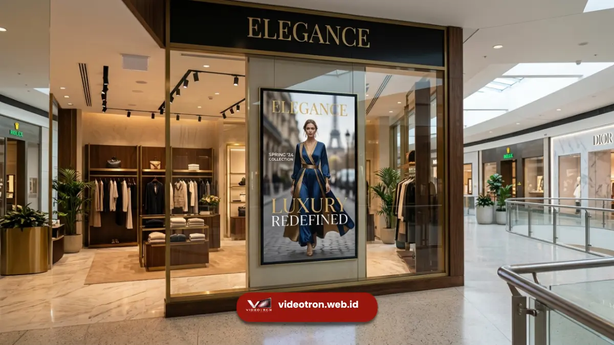
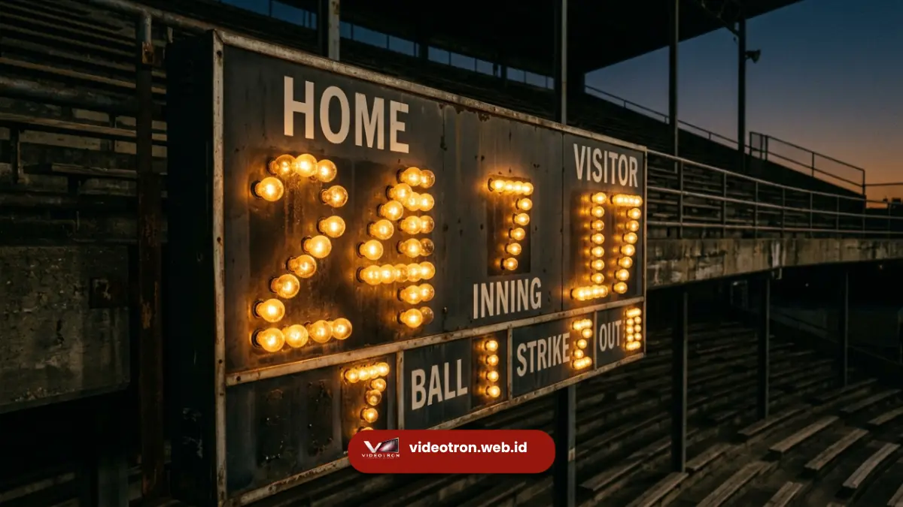

Blog & Edukasi
Kumpulan artikel edukatif, panduan memilih videotron indoor & outdoor, tips perawatan, serta berita teknologi LED videotron terkini.

Branding & Bisnis5 Fungsi Utama Videotron untuk Branding dan Komunikasi Bisnis
Pelajari 5 fungsi utama videotron untuk meningkatkan branding, awareness, dan keterikatan audiens bisnis Anda.

Sejarah & TeknologiSejarah Perkembangan Videotron: Dari Lampu Pijar hingga LED COB
Telusuri sejarah perkembangan videotron dari era papan skor lampu pijar hingga teknologi LED COB modern.
 Panduan & Pengertian
Panduan & Pengertian
Apa Itu Videotron? Pengertian, Fungsi, dan Jenisnya untuk Bisnis
Temukan pengertian videotron, jenis indoor & outdoor, serta fungsi utamanya untuk mengoptimalkan branding visual bisnis Anda.
 Edukasi
Edukasi
Cara Memilih Pitch Pixel (P) yang Tepat untuk Videotron Indoor
Pelajari bagaimana menentukan resolusi videotron berdasarkan jarak pandang minimum audiens Anda.
 Teknologi
Teknologi
Mengenal IP65: Standar Ketahanan Videotron Outdoor
Apa itu IP Rating? Mengapa sangat penting untuk instalasi billboard digital di luar ruangan.
 Inspirasi
Inspirasi
5 Tren Digital Signage untuk Retail di Tahun 2026
Dari transparent LED hingga interactive display, lihat bagaimana teknologi LED mengubah toko offline.
 Tips & Trik
Tips & Trik
Pentingnya Perawatan Berkala untuk Videotron
Langkah-langkah sederhana agar videotron Anda bisa berumur panjang dan selalu tampil prima.